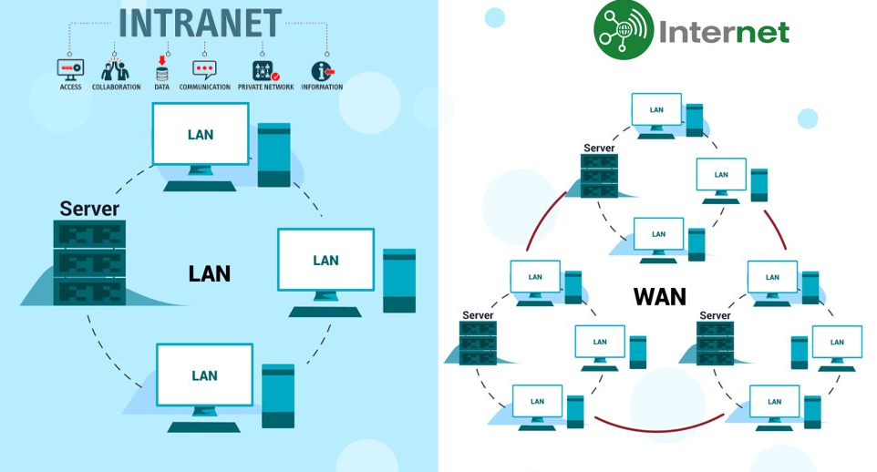
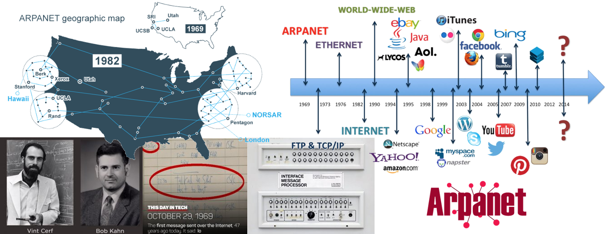

Internet a infranet
Programové vybavení (software) je podmínkou využití technického vybavení (hardware). V raných dobách počítačové éry byly programy vytvářeny vždy pro konkrétní hardware. V okamžiku, kdy počítače začaly být produkovány ve větších sériích, objevila se i potřeba vývoje speciálních systémových programů, které by obstaraly základní operace s hardwarem a nabídly prostředí pro běh aplikací, tj. programů určených pro konkrétní účely.
Vývoj internetu
Dějiny internetu jsou spojeny se vznikem počítačů (po roce 1945) a následně počítačových sítí, které jim umožnily vzájemně komunikovat. Přímým impulzem byla studená válka (od roku 1947 mezi USA a SSSR), kde protivníkům hrozilo masívní ničení komunikační infrastruktury jadernými zbraněmi.